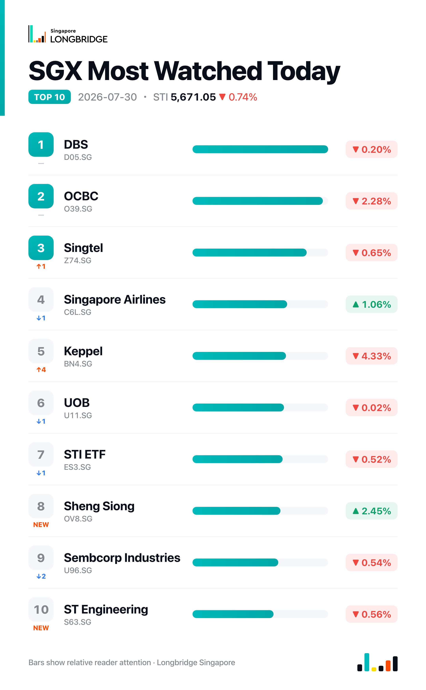

STI Slips 0.74% to 5,671.05 as Keppel's Earnings Miss Outweighs Core Growth
The Straits Times Index closed at 5,671.05 on Thursday, down 42.14 points, or 0.74%, after ranging between 5,638.94 and 5,683.35 during the session. Declines outnumbered advances across the benchmark's 30 constituents, 14 lower against nine higher and seven unchanged, with Keppel and OCBC leading the session's losses.
The pullback followed a softer Wall Street session overnight, with sentiment weighed by renewed uncertainty over the path of US rates after Federal Reserve Chair Kevin Warsh held rates unchanged, a decision read as prioritising price stability over near-term easing. The three local banks did not move together, though: DBS eased 0.2% and UOB was little changed at -0.02%, while OCBC dropped 2.28%, a divergence a day after the trio had advanced in lockstep.
Session Movers
DFI Retail (D01.SG, +4.47%) was Thursday's best performer among the session's movers after swinging to a USD118 million interim profit for the first half of 2026, reversing a year-earlier loss, with underlying profit up 44% despite revenue slipping 6% to USD4.139 billion. It raised its interim dividend and lifted full-year guidance, while Mannings same-store sales in Hong Kong and Macau rose 5%. CGS International and DBS both reaffirmed Buy calls, at S$5.50 and S$5.00; consensus is Strong Buy with a target implying about 37% upside.
Keppel (BN4.SG, -4.33%) was the steepest decliner after reporting a 59% drop in first-half net profit to S$154.7 million, dragged by S$375 million of non-core losses tied to rig impairments and its M1 deal fallout. Core profit excluding those items rose 25% to S$530 million on revenue up 24.6% to S$3.8 billion, and the group held its interim dividend at S$0.15 a share while continuing a S$500 million buyback. Analysts kept a Buy rating and S$12.64 target, implying about 10% upside — the selloff centred on the headline miss, not underlying growth.
Singapore Airlines (C6L.SG, +1.06%) rose despite reporting its first-ever quarterly net loss, S$76 million, as a fuel-cost surge and losses from associate Air India offset record quarterly revenue of S$5.7 billion, up 19.3% year on year. DBS and Citi kept cautious Hold ratings on the miss and a stretched valuation, but the advance suggests other investors focused on revenue resilience and hedging, reversing Wednesday's 3.09% decline.
OCBC (O39.SG, -2.28%) declined more than either local bank peer, with no fresh company-specific news a day after unveiling its HELIOS AI onboarding platform on Wednesday.

One point worth noting
Thursday was not a banks-move-together session. DBS eased just 0.2% and UOB was effectively flat at -0.02%, while OCBC dropped 2.28% — a gap of more than two percentage points a day after the trio advanced in lockstep. OCBC's slide leaves it at 2.14 times book, near the top of its five-year range and pricier than either peer, a premium that likely made it the more natural release valve once banks came under pressure.
This recap is for informational purposes only and does not constitute investment advice.